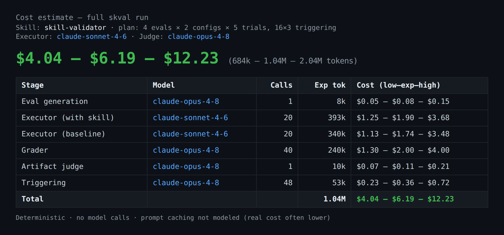

skval
Give it a skill, get a score.
The Skill Validator Framework — point it at a Claude Code skill and get back a
0–100 score, a letter grade, a per-dimension breakdown, ranked findings, and a
Ship / Revise / Reject verdict. The measurement counterpart to skill-creator.

How it scores
A safety-gated, normalized weighted composite over six dimensions — reported as a vector and a single number.
| Dim | Dimension | Weight | How it's measured |
|---|---|---|---|
| D1 | Structural integrity | 0.15 | deterministic |
| D2 | Effectiveness (pass rate + lift over a no-skill baseline) | 0.30 | behavioral, LLM-graded |
| D3 | Reliability (pass^k over N trials) | 0.20 | behavioral |
| D4 | Artifact quality (decomposed LLM rubric) | 0.20 | LLM-as-judge |
| D5 | Triggering (precision / recall / F1) | 0.15 | behavioral |
| D6 | Safety / least-surprise | gate | unsafe ⇒ score 0, verdict Reject |
Bands: A≥90, B≥80 (Ship) · C≥70, D≥50 (Revise) · else F (Reject). skval also classifies the skill (task / file-transform / interactive / discipline / reference) and routes evals accordingly.


skval vs. skill-creator
They aren't rivals — they're two halves of one loop. Anthropic's skill-creator helps you
write and iterate on a skill with a human in the loop; skval gives an automated, defensible
verdict on the result — and can audit skills you didn't write. skval even
exports to skill-creator's eval-viewer,
so the two interoperate.
| Capability | skill-creator | skval |
|---|---|---|
| Primary job | Author & iterate (draft → test → improve) | Audit & grade a finished skill |
| Headline output | Eval viewer + benchmark; you decide | 0–100 score, grade, Ship / Revise / Reject |
| Structural / lint checks | — | ✓ deterministic static checks (D1) |
| Safety gate | — | ✓ veto gate + safe extraction of untrusted skills (D6) |
| Offline, no-model path | — needs model runs + review | ✓ deterministic scan, CI-gateable (exit ≠ 0 on Reject) |
| Pre-run cost estimate | — tokens / time only, after the run | ✓ token + $ projection before you launch |
| With-skill vs. baseline evals | ✓ core of the loop | ✓ effectiveness + lift, significance (D2) |
| Reliability | variance (mean ± stddev) | ✓ pass^k over N trials, scored (D3) |
| Triggering | ✓ description optimizer (train / test) | ✓ precision / recall / F1, scored (D5) |
| Skills you didn't write | aimed at your own authoring | ✓ dir / SKILL.md / .skill, untrusted-safe |
| Many skills at once | single-skill iteration | ✓ batch leaderboard + regression history |
| Judge-bias controls | blind A/B (optional, advanced) | ✓ blind + position-swap + cross-family by default |
Reach for skill-creator when…
you're building a skill — capturing intent, drafting, and iterating on a handful of examples with your eyes on every output.
Reach for skval when…
you need a decision: is it good enough to ship? did my edit regress? is this third-party skill safe? — or you're gating many skills in CI.
Benchmark
skval's deterministic structural scan over 10 widely-used skills — 8 ship as-is; the two flagged hit the size budget. See the full benchmark →
| Skill | Type | Score | Findings |
|---|---|---|---|
| mcp-builder | task | 100 / A | — |
| frontend-design | task | 100 / A | — |
| test-driven-development | discipline | 100 / A | — |
| file_transform | 100 / A | — | |
| pptx | file_transform | 100 / A | — |
| canvas-design | file_transform | 100 / A | — |
| xlsx | file_transform | 100 / A | — |
| web-artifacts-builder | task | 100 / A | — |
| skill-creator | file_transform | 96 / A | SKILL.md ~8246 tokens (>5000) |
| docx | file_transform | 92 / A | 599 lines & ~5142 tokens (over budget) |
docx · 92 → 100
Applied skval's finding — moved the XML Reference section to references/ (progressive disclosure). skval's own compare.py: +8.
bad-skill · 73 → 100
Fixed four findings (kebab name, drop <>, broken ref, stray key). compare.py: +27, Revise → Ship.
Know the cost before you run
A full validation spawns dozens of subagents (~1M tokens for a default run). For token-billed / enterprise
teams, skval estimate projects the token + $ cost up front — deterministic, no model calls.
# preview the cost of a full run (directory, SKILL.md, or .skill archive) uv run skval estimate <skill-source> # → ## $4.04 – $6.19 – $12.23 (684k – 1.04M – 2.04M tokens)

skval estimate — a low / expected / high range, broken down per stage.How it's computed
Per-stage token assumptions (executors, graders, judge, triggering) × your run plan × a per-model rate table, as a low / expected / high range. Anchored to observed runs; prompt caching isn't modeled, so real cost usually runs lower.
Tune the plan
Flags for --evals, --trials, --configs, and the --executor-model / --judge-model. Read-only by default; --write also saves an estimate.json.
Quick start
Run the deterministic scan now — no model calls, fully offline:
# install uv venv && uv pip install -e ".[dev]" # score a skill (directory, SKILL.md, or .skill archive) uv run skval structural <skill-source> # → ██████████████ 100 / 100 Grade: A Verdict: Ship
For the full six-dimension run, ask Claude to “validate / score this skill” — it generates evals, runs the task with and without the skill, grades the outputs, judges quality, and tests triggering, then assembles the scorecard (preview the cost first).
Step-by-step guide
docs/USAGE.md — install to a full scorecard, with screenshots.
Browse a real run
commit-conventions — the eval set + every per-trial result.